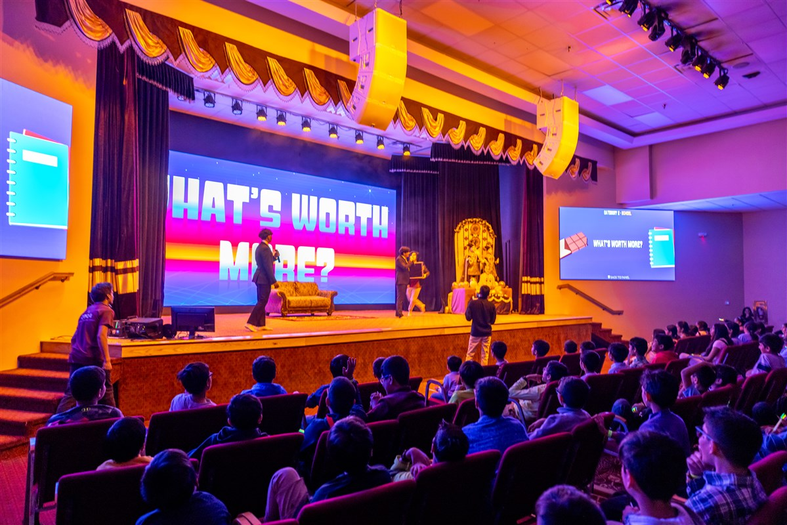

ENGR 101 Instructional Aide
Context: I'm an Instructional Aide for ENGR 101, Introduction to Computers and Programming, a freshman engineering course at the University of Michigan. I provide instructional support in MATLAB and C++ through office hours, helping students with homework, labs, and projects. My role is to help them debug code, explain concepts in ways that click, and guide them through the frustration of getting something wrong before they figure it out.
Engineering Competency Connections:
Communication
Explaining technical concepts to beginners forced me to think about how I communicate. Students come in stuck on different things. Some need the big picture first. Others want to trace through their code line by line. I had to learn to read where someone was at and adapt how I explained things. That meant dropping jargon, drawing things out, and sometimes breaking a problem into even smaller pieces than I thought was possible. Clear communication in engineering matters whether you're in a design review, writing documentation, or walking a client through a solution.
Problem Solving
When a student's MATLAB or C++ code isn't working, whether it's a homework problem, lab, or project, we debug together. I don't just give them the answer. We go through it. What did they expect? What's actually happening? What have they already tried? A lot of the time the bug is something simple, but the process of walking through it teaches them how to approach problems on their own. I also run into cases where I'm not sure what's wrong either. Then it's about thinking through it systematically, testing hypotheses, and knowing when to look things up or ask someone else. That's the same kind of problem solving I use in my own projects.
Technical Competence
To help students in MATLAB and C++, I need to understand the material deeply. That means staying on top of the coursework, remembering syntax and how the tools work, and being able to apply concepts across different types of problems. Sometimes a question about arrays, loops, or functions pushes me to dig into something I hadn't thought about in a while. Being an IA keeps my programming fundamentals sharp and forces me to connect different ideas in ways that help students see the full picture.
Leadership
Even though I'm not the professor, I'm in a position where students look to me for guidance. That means setting a tone in office hours that's supportive but still pushes them to think. It means knowing when to let them struggle a bit and when to step in. It also means being reliable. If I say I'll be there, I'm there. If I say I'll follow up on something, I do. Small things, but they matter when you're trying to help people learn and grow.
Being an IA has made me a better communicator, a more patient problem solver, and more confident in my own technical skills. It's also reminded me how much it matters to have someone who can explain things when you're stuck. That's something I want to carry into whatever I do next.
Kids Diwali Celebration: Leading a 500 Person Event

Context: As a BAPS Youth Leader I was asked to lead the Kids Diwali Celebration for more than 500 kids and families. The event had a lot of moving pieces decorations the stage program registration food and making sure people actually flowed through the space without getting stuck.
Engineering Competency Connections:
Leadership
At first I tried to be involved in everything. I wanted to review the decorations approve every part of the program and weigh in on all the logistics. That quickly became unsustainable. I eventually realized that if I kept trying to control every detail nothing important would move forward. I shifted to recruiting strong department heads for each area and focused on setting expectations removing roadblocks and checking in on progress instead of doing their work for them.
Communication
Keeping so many departments aligned forced me to communicate clearly and consistently. I set up regular check in meetings and a shared planning doc where each team could record updates dependencies and open questions. This cut down on last minute surprises like two teams needing the same space at the same time. It also made it easier for people to speak up when something was not working because they knew there was a regular forum for it.
Teamwork
The event only worked because every department trusted each other and understood how their piece fit into the whole. I spent time walking through the full timeline with the team so everyone could see when they were on center stage and when they were in support mode. During the event itself I shifted from task mode to support mode making sure departments had what they needed and stepping in where gaps showed up.
By the end of the night the event ran smoothly and kids left excited about Diwali which was the whole point. For me the bigger lesson was that leadership is less about being everywhere and more about building a team you trust setting a clear direction and then getting out of the way so people can do their work.